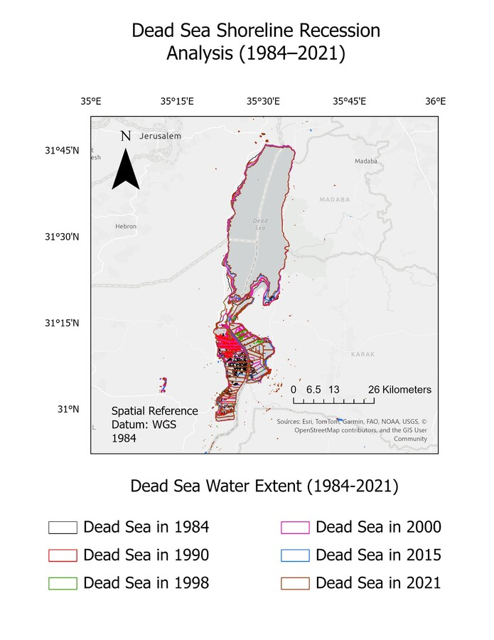
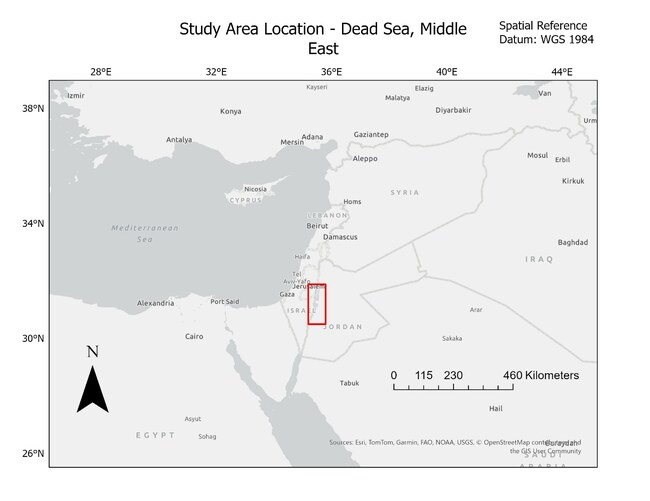
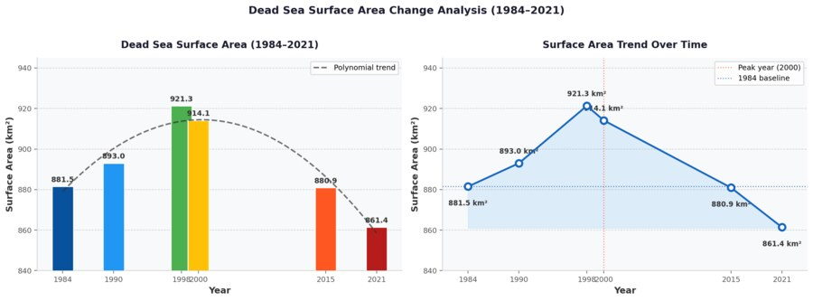

GIS Shoreline Change, Dead Sea 1984–2021
The Dead Sea's decline is well documented in the literature, but this project measures it independently: pulling raw satellite water‑classification rasters for six benchmark years and quantifying the loss in ArcGIS Pro, rather than citing someone else's number.

Abstract
The Dead Sea, on the border of Israel and Jordan, is the lowest point on Earth's surface and one of the most extensively documented cases of terminal lake recession anywhere in the world. Its water loss, driven mainly by reduced Jordan River inflow and large-scale industrial potash extraction, is well established in the hydrology literature. This project used free, publicly available satellite remote-sensing data and GIS spatial-analysis tools to independently measure that recession, quantifying how much surface area the Dead Sea has actually lost between 1984 and 2021, and where that loss has been concentrated.
Monthly water-classification rasters from the JRC Global Surface Water dataset (European Commission Joint Research Centre, derived from Landsat imagery at 30 m resolution) were pulled for six benchmark years (1984, 1990, 1998, 2000, 2015, and 2021) via Google Earth Engine, then converted to vector polygons and measured geodesically in ArcGIS Pro. The result: total surface area declined from 881.5 km² in 1984 to 861.4 km², a net loss of 20.1 km² (about 2.3% of the 1984 baseline). But the path there wasn't a steady decline. Area actually increased through the 1990s, peaking at 921.3 km² in 1998, before reversing into a sustained decline from 1998 onward. The steepest, most visible losses are concentrated in the southern basin, where industrial evaporation ponds have replaced large stretches of what used to be open water.
Why this matters
The Dead Sea's shrinkage isn't just a striking visual. It's an active regional policy problem. Its continued decline factors directly into ongoing negotiations between Israel, Jordan, and the Palestinian Authority over water-sharing agreements and the proposed Red Sea-Dead Sea water conveyance project, intended to help stabilize water levels. Any of that policy work depends on having a reliable, quantitative record of how much the lake has actually shrunk and where, which is exactly the kind of measurement problem GIS and remote sensing are well suited to solve at a regional, multi-decade scale that ground surveys alone can't easily match.

Method
Rather than relying on secondary reports of Dead Sea shrinkage, this project built an independent measurement from raw satellite data. The JRC Global Surface Water Monthly History dataset was queried through Google Earth Engine for six study years spanning the full 37-year record, using each year's August image specifically to minimize seasonal water-level variability and cloud interference, a choice grounded in established best practice for monitoring arid-region water bodies. For each year, pixels meeting the water classification threshold were extracted and exported as a GeoTIFF raster at 30 m resolution, covering a bounding box of roughly 35.2 to 35.8°E, 30.5 to 31.9°N.
All six annual rasters were brought into a single ArcGIS Pro file geodatabase and converted to polygon feature classes using the Raster to Polygon tool. A geodesic area field was then calculated on each polygon layer to get the true surface area in square kilometers, rather than a simplified planar approximation, which would introduce error over an area this size, summing only the polygons actually classified as water to get each year's total. The six years' shoreline polygons were then layered together in a single cartographic output, styled by year, with a basemap, scale bar, north arrow, and coordinate graticule added to standard mapping conventions, turning six separate area numbers into a single map that shows exactly where the shoreline has moved over nearly four decades.
Results
The Dead Sea's surface area measured 881.5 km² in 1984, the study's baseline year. Rather than declining steadily from there, it actually grew through the 1990s, reaching a peak of 921.3 km² in 1998, a gain of nearly 40 km² likely reflecting inter-annual variability in precipitation and Jordan River inflow during that period rather than a genuine reversal of the long-term trend. From 1998 on, the trend reversed decisively: area fell to 880.9 km² by 2015 (back below the 1984 baseline) and to 861.4 km² by 2021. Net change over the full 37-year record was a loss of 20.1 km², or about 2.3% of the 1984 starting area.
The spatial pattern is at least as informative as the area numbers themselves. Overlaying all six years' shorelines shows the southern basin has undergone by far the most dramatic transformation. Much of what was open water in 1984 has been replaced by industrial evaporation ponds, consistent with independent research documenting the same conversion. The northern basin's retreat is more modest and concentrated along its eastern and southern margins, but the 2021 shoreline is visibly smaller than 1984's across both basins when the six years are compared directly on the map.

Conclusion
Measuring the Dead Sea's recession independently from raw satellite imagery, rather than citing others' figures, produced results that line up closely with the existing literature on Dead Sea hydrology (Gavrieli et al., 2005; Salameh et al., 2019), both in the overall magnitude of loss and in identifying the southern basin as the epicenter of change. That agreement is itself a useful validation. It shows that freely available datasets (JRC Global Surface Water) and standard GIS tools (ArcGIS Pro) are enough to independently reproduce a documented environmental trend at a regional, multi-decade scale, without needing specialized or proprietary data sources.
A couple of limitations are worth being upfront about. Using a single August image per year captures a snapshot rather than the full seasonal range of water extent, and the Dead Sea's unusual hypersaline chemistry can affect how accurately standard water-classification algorithms detect its surface compared to freshwater bodies. Both are solvable in future work, through multi-temporal composites instead of single monthly images, and spectral indices calibrated specifically for saline water, but neither undermines the core finding here: a real, accelerating, spatially concentrated loss of surface area that the data speaks to directly.